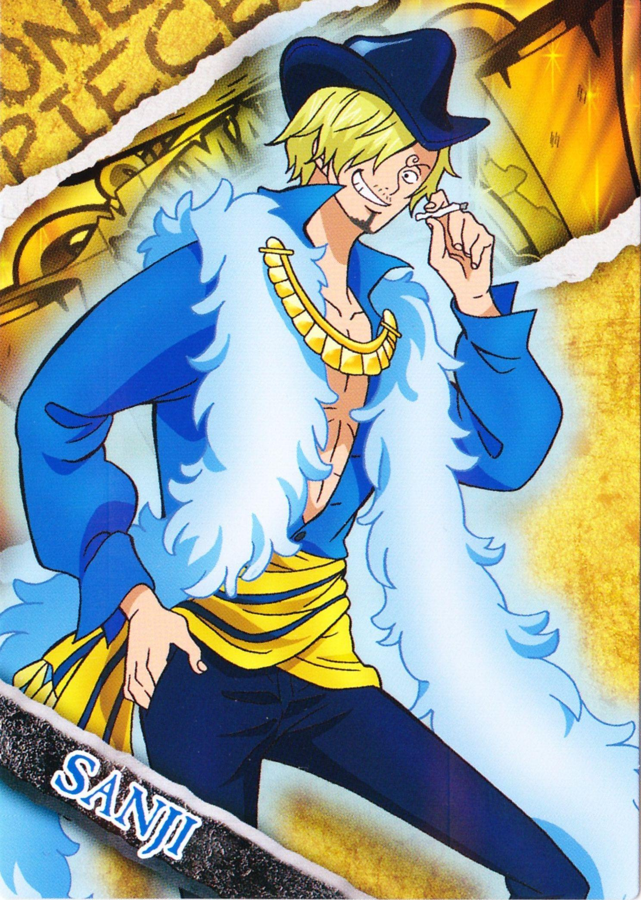

海贼王人物介绍
-
蒙奇·D·路飞：漫画及改编动画《海贼王》的男主角。草帽海贼团船长。由于他的标志性特征是一顶草帽，因此常被直接称呼为草帽小子/草帽路飞。梦想是找到传说中的ONE PIECE，成为海贼王。性格积极乐观，爱憎分明且十分重视伙伴，对任何危险的事物都超感兴趣。看似白痴，却是一个大智若愚型的无愧船长之职的人。和其他传统的海贼所不同的是，他并不会为了追求财富而无故杀戮，而是享受着身为海贼的冒险。
-
罗罗诺亚·索隆：罗罗诺亚·索隆（Roronoa Zoro）是漫画《海贼王》中的角色，草帽一伙中的战斗员，是悬赏过亿武艺高强的三刀流剑士，二年前超新星11人之一，能够自由操纵三把刀战斗。爱喝酒，爱睡觉，讲义气，海贼第一超级大路痴。为了小时候与挚友的约定而踏上了前往世界第一剑士的道路，随后成为主角蒙奇·D·路飞的第一个伙伴。在初次败给世界第一剑士“鹰眼米霍克”后向路飞发誓永不再败，并且更加努力的锻炼自己。两年后的他成功与伙伴们汇合，并且为了实现自己的梦想，奔赴强者如云的新世界。
-
娜美：又叫奈美娜美（ナミ，Nami），日本漫画《ONE PIECE》中的女主角。草帽海贼团的航海士，主人公路飞的第二个伙伴。特征是橘色的短发（两年后为波浪长发）和左肩的刺青（风车与橘子的图案）。使用棍术，现在武器为“魔法天候棒”。精通气象学和航海术，擅长偷术、骗术、谈判及威胁恐吓，头脑聪明又机灵，用身体感知天气，完美指示航路，是个能精确画出航海图的天才航海士。本质上是个细心善良、重视感情、嫉恶如仇、坚强能干的女性。喜欢的东西是钱和橘子，梦想是要画出全世界的地图。
-
乌索普：乌索普（ウソップ，Usopp），日本漫画《海贼王》及其衍生作品中的人物。草帽海贼团狙击手，特征为头戴狙击防风镜、浅啡色头巾，长鼻子。小时候是出名的吹牛大王，和村里的几个孩子组成“乌索普海贼团”，自称乌索普船长。发现克洛船长的阴谋后，立志要保护村里的人，和路飞并肩作战。梦想是要成为勇敢的海上战士。
- 
山治：山治（サンジ，Sanji）是日本人气漫画《海贼王》中的主要角色之一。草帽海贼团厨师，金发，有着卷曲眉毛，永远遮住半边脸的家伙，香烟不离口，最爱女人，很花心但很有风度，海贼中的绅士。小时候跟随大海贼红脚哲普学习厨艺。踢技以快准狠被海军称之为“黑足”，但从不愿意伤害任何的女性，哪怕是敌人。在经过司法岛一战后也成了悬赏对象，首次悬赏就有7700万之高。梦想是找到传说之海All Blue而跟随路飞一同进入了伟大航路。是文斯莫克家族的第三子。
-

托尼托尼·乔巴：托尼托尼·乔巴是日本人气漫画《海贼王》中的人物。乔巴是草帽海贼团的船医，吃了人人果实的驯鹿能力者，人人驯鹿，可用蓝波球进行八段身体变形。托尼托尼·乔巴是草帽海贼团的第五位伙伴，职位是船医。原为磁鼓岛库蕾哈医生最宠爱的驯鹿兼医疗助手。乔巴的恩人是“庸医”希鲁鲁克医生，他身为野生驯鹿时本来没有名字，“乔巴”也是由希鲁鲁克给他命名的，意思是他有一对连树木都可以轻松砍倒的角。乔巴的特征是蓝色的鼻子和一顶画有“X”标记的粉红色帽子。本身很怕热，所以喜欢的岛屿是春天的冬岛。是草帽海贼团年龄最小的成员。人兽型的姿态下，则是伙伴中身材最矮小的成员。
-
妮可·罗宾：妮可·罗宾（ニコ·ロビン ，Nico·Robin）是日本漫画《海贼王》中的女二号，草帽海贼团的考古学家，出生在西海的考古学之岛“奥哈拉”，年仅8岁就被悬赏千万的奥哈拉幸存者。是拥有“花花果实”的恶魔果实能力者，能让身体的任何部位像开花一样绽放在视线范围内的任何有形体的事物上并作出攻击或其他用途。目标是找到真正的历史正文，绝不饶恕践踏历史文物的人。
-
弗兰奇：弗兰奇，（原名：卡特·弗兰姆）是日本漫画《海贼王》中的人物。草帽海贼团船匠，性格豪放，喜欢唱歌，跳奇怪的舞，下身喜欢只穿一条短裤。身为改造人的弗兰奇，身体藏着各种兵器。弗兰奇在被cp9抓入司法岛的过程中被路飞他们救罗宾的精神所感动，义无返顾的站在路飞他们一边。司法岛事件结束后，弗兰奇用宝树亚当的材料建造了一艘梦想之船，取名“桑尼号（即万里阳光号）”，并赠送给草帽海贼团。后来在路飞的邀请下进入了草帽海贼团。
-
布鲁克：布鲁克（ブルック， Brook）是日本漫画《海贼王》中的人物。号称“鼻歌”，现为草帽海贼团音乐家。原本是某国护卫队团长，后加入伦巴海贼团，50年前跟鲸鱼拉布约定在“双子峡”重逢。后来在魔幻三角地带遇到敌人并遭遇毒手，因黄泉果实的能力，灵魂走出黄泉并准备回身体时，在魔幻三角地带迷路一年，找到的身体已变成骷髅，但爆炸头仍然存在，自此他只能以骷髅状态生存。幽灵岛战役结束后，从路飞口中得知伙伴拉布现在平安无事的消息，为了履行和拉布的约定，才正式加入草帽海贼团。